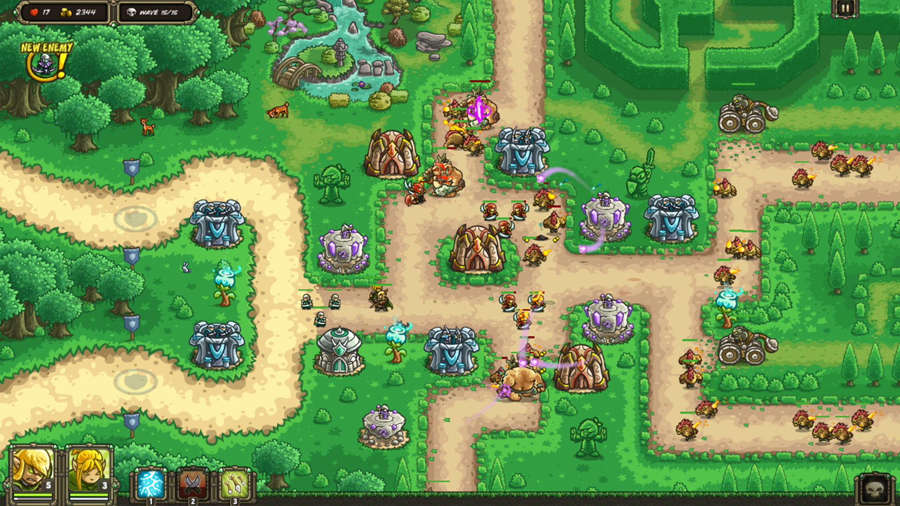
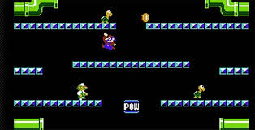

One of my favorite games is Kingdom Rush Origins. The third mobile game in its series. Kingdom Rush Origins is a tower defense game. The player upgrades their towers as they fight off against waves of enemies. The game was designed to be played on the web browser, however, it was adapted to the mobile platform where I personally played it. The game was made by Ironhide Studios.

The game tells the story of a kingdom growing in size, expanding throughout the world. Each level is a new area where new enemies are played against. The player starts with 20 lives. These are reduced as the enemies get through the edge of the map you are defending. There are different types of towers, so the player must choose different towers that go well with each other to make a winning strategy in defeating the waves of enemies. The game is played, in my experience, by touch screen the player just clicks the towers they want to build on the spots.
I enjoyed the simplicity yet difficult game play of the game. I however didn’t like the boss battles in the game, they all seemed to be the same just with a different skin attached. I believe the game could be improved by adding another layer of challenge to the levels, similar to the bosses but with a different aspect instead of just a reskin as mentioned before.
Mario Bros
Another one of my favorite games is Mario Bros. Mario Bros. is a platformer arcade game originally designed for an upright cabinet. It was created by Shigeru Miyamoto through Nintendo. The game takes place in a level that is modeled to give the feel of a sewer, as the main characters, Mario and Lougi, are both plumbers. For each level monsters appear in the sewer and the two plumbers need to defeat them. The player can run left, right, and jump up to the platforms in each level. The goal is to kill all the monsters. This is done by hitting the ground from underneath them, which flips them over, then running over to them and kicking them away. Each level also has a POW button, when hit it flips over all the monsters on the stage. However, if the player can't kick the monsters in time they flip back over and move across the stage even faster. This game was originally designed to be played in an upright cabinet, with the use of a joystick and buttons. I played the game on a table top cabinet, which also uses the same joystick and buttons.

Mario Bros Enemies
Enemys
Phase
Hits To Flip Over
Shellcreeper
Phase 1
1
Sidestepper
Phase 4
2
Fighter Fly
Phase 6
1
I liked how the game was so easy to understand the goal. There aren’t any hidden mechanics, or hard to grasp concepts. One can play and enjoy the game without any previous experience playing this game or any other cabinet style games. With simple mechanics such as moving the joystick left moves the character left and moving it right moves the character right, the game can be played by anyone regardless of skill. Yet, even though the game is easy to play, one can still get better and better at it with each level learning new patterns and strategies.